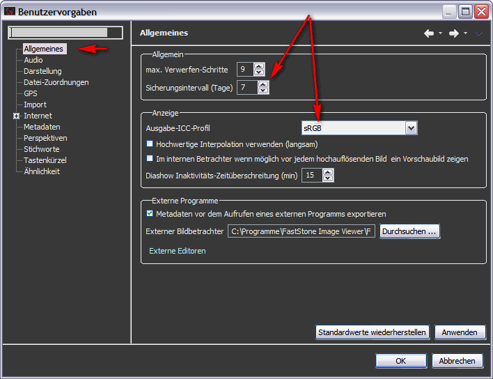

Einrichten
der Umgebung
Der
nächste Schritt nach dem Erstellen eines ersten Katalogs und vor dem
Importieren von Bildern ist die Einrichtung wesentlicher Einstellungen ( Fenster>Benutzervorgaben*).
Diese Einstellungen
gelten für
die gesamte Workbench unabhängig vom aktuellen Katalog.
Zumindest
sollten Sie sich die folgenden Präferenzen-Seiten ansehen:
- Allgemein.
- In der Gruppe Allgemein setzen Sie ein geeignetes Intervall für die automatischen Katalogsicherungen.
- In der Gruppe Anzeige Ändern
Sie Ausgabe-ICC-Profil auf
Adobe
RGB, wenn Sie mit einem Wide-Gamut-Monitor
arbeiten.

- Importieren. Überprüfen
Sie alle Einträge auf dieser Seite bevor Sie Bilder importieren. Eine
ausführliche Erläuterung der Einträge finden Sie
hier.
- Schlagwörter. Richten
Sie ein Schlagwort-Filter ein, um zu vermeiden, dass ihre
zentrale Schlagwort-Liste durch unerwünschte Schlagworten verunreinigt wird.
*) Auf dem Mac: ZoRa Photo Director>Einstellungen>...